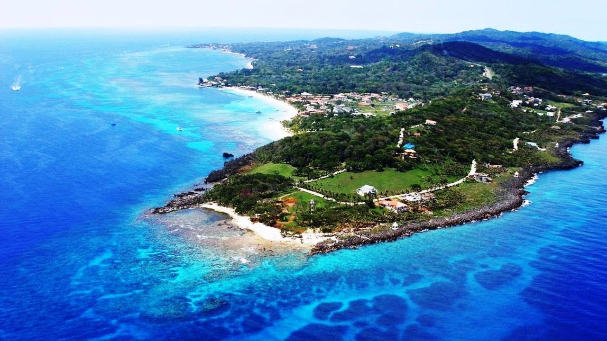
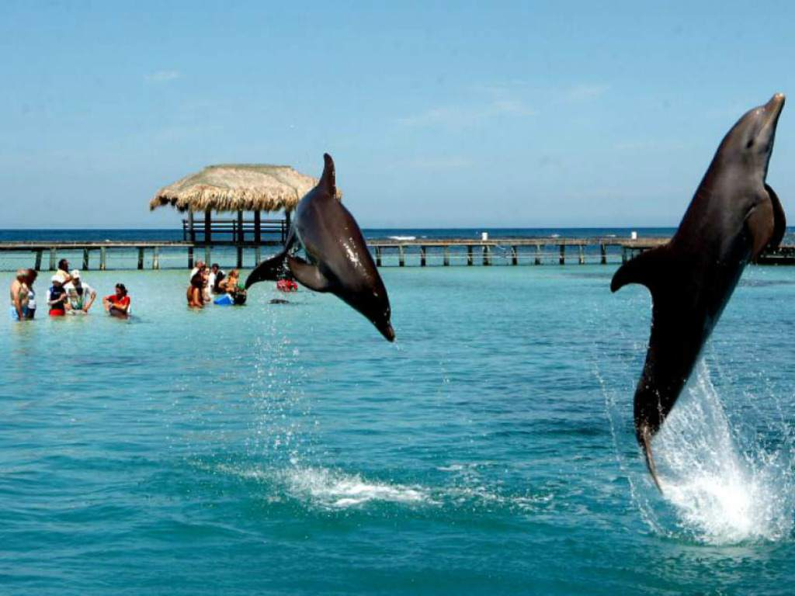
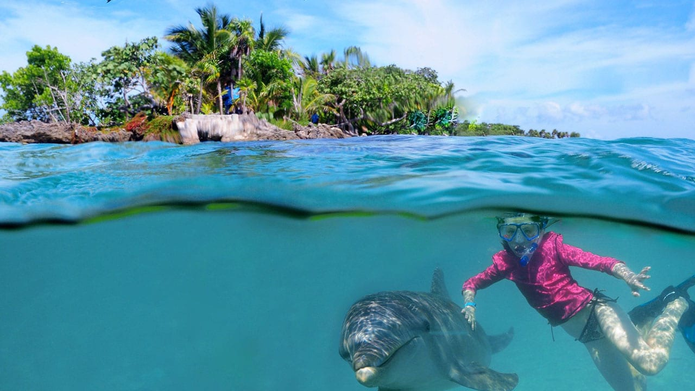

Let's Travel
Roatan Islas de la Bahia
La isla de Roatán está localizada a unos 56 kilómetros de la Costa Atlántica de Honduras, justo en el Mar Caribe. Roatán forma parte y además es la isla principal de lo que se conoce como el departamento insular de Islas de la Bahía. Roatán es la más grande de las tres islas pertenecientes a Honduras que conforman las Islas de la Bahía.
A la isla de Roatán, actualmente encabeza lo que es la lista de destinos turísticos pertenecientes a la zona caribeña de Honduras, además es el tercero a nivel mundial según TripAdvisor. Todo esto debido a que la isla es todo un encantador y magnifico paraíso tropical que tiene todos aquellos requisitos necesarios para que las personas pasen de lo mejor sus vacaciones en la isla. Esta se caracteriza por tener playas esplendidas con arenas blancas y un conjunto de aguas cristalinas, posee un clima perfecto, una naturaleza digna de admirar, y posee una barrera coralina magnifica, además de zonas de buceo, pero sobre todo algo que agrada es a la gente tan amable que en ella habita.
La isla posee diversidades de hoteles, posee discotecas, bares y muy buenos restaurantes con el objetivo de dar disfrute a los turistas, sitios que llenan de satisfacción al turista. Por todas estas características, es que la isla está en el puesto número 3 de las 10 mejores islas en las que se puede vacacionar a nivel mundial, luego de la Isla Turcas y Caicos, la isla Maui de Hawái y la Isla Providenciales.
Una de las experiencias más fascinantes de Roatán es visitar a los delfines en Anthony’s Key Resort. Los delfines nariz de botella son mantenidos en cautiverio en el Marine Institute (que opera en el complejo) para la investigación cognitiva.
así como las investigaciones de comportamiento y reproducción que se llevan a cabo por un grupo de científicos de diversas nacionalidades. El complejo es famoso por sus programas educativos sobre delfines. Estos programas educan sobre su anatomía, comportamiento y técnicas de entrenamiento
¿Como llegar?
Entre los transportes que se utilizan en la isla están:
- Los Marítimos: entre estos tenemos el Ferry Galaxy Wave este se encarga de conectar BrickBay, que queda a 15 minutos de CoxenHole, con La Ceiba, este realiza un recorrido que dura de una hora a una hora y media.
- Aéreo: Entre el transporta aéreo destacan las aerolíneas:AeroCaribe de Honduras, entre su destino esta San Pedro Sula.
- Aerolineas Sosa, sus destinos son La Ceiba, San Pedro Sula, Tegucigalpa.
- American Airlines, su destino es Miami.
- CM Airline, sus destinos San Pedro Sula, Tegucigalpa.
- Delta Air Lines, destino Atlanta
- EasySky, destinos La Ceiba, San Pedro Sula, Tegucigalpa.
- Lanhsa, sus destinos son La Ceiba, San Pedro Sula, Tegucigalpa.
- Avianca, sus destinos son Houston, Miami, San Salvador, San Pedro Sula.
- Avianca Regional que opera desde la Isleña, sus destinos son La Ceiba, San Pedro Sula, San Salvador, Tegucigalpa